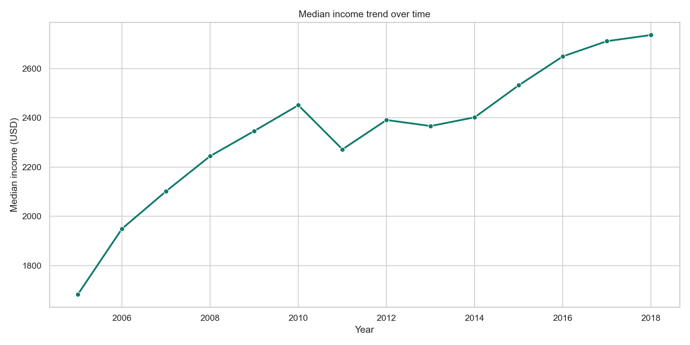
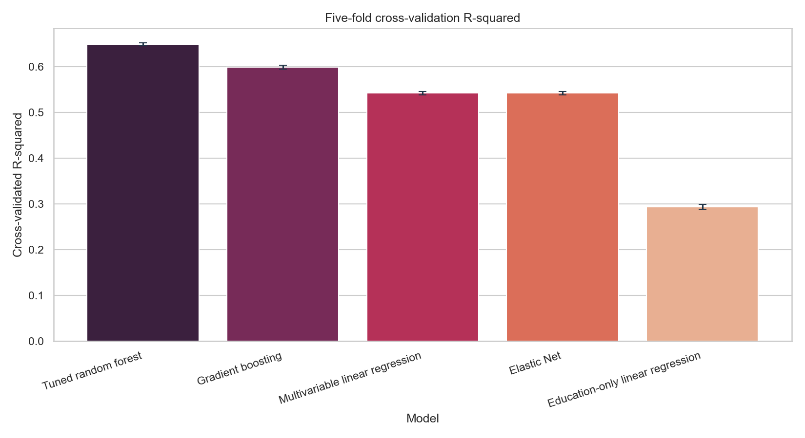
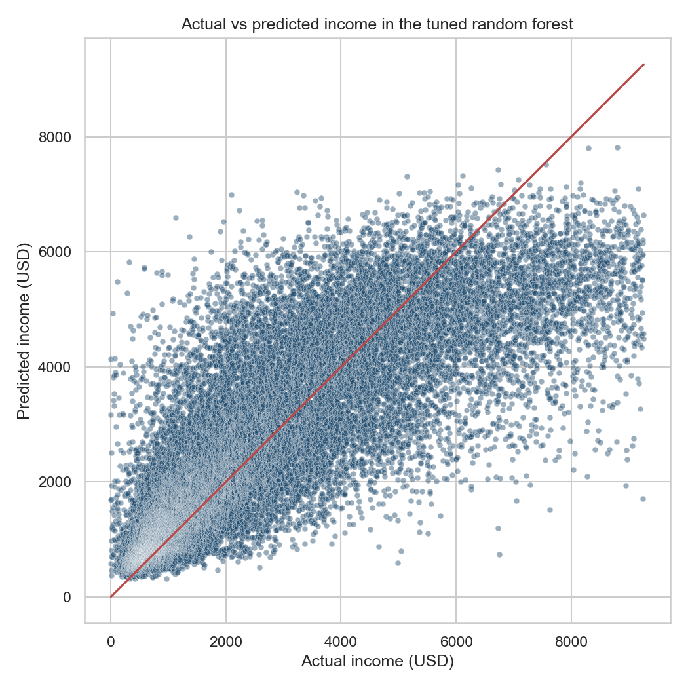
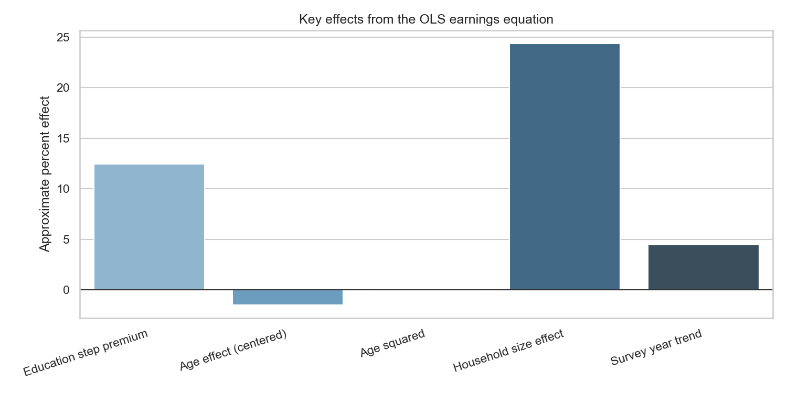

89,935
Valid records in the cleaned analytical layer
This project studies how education relates to income in Korean welfare microdata. The updated version keeps the strongest part of the original delivery, which was its theoretical motivation, and expands it with formal tests, centered-age econometrics, distributional analysis, and cross-validated machine-learning benchmarks.
The original notebook framed education and income as a serious social question rather than as a generic predictive exercise. That framing remains essential. Education is not only a variable that helps fit a model. It stands in for human-capital formation, credentials, labor-market sorting, and differential access to opportunity.
The upgraded version therefore asks a richer sequence of questions. First, does education visibly separate income outcomes in the raw data? Second, how much predictive power is gained when broader demographic and household context is included? Third, is the return to education constant across the income distribution or does it rise in better-paid parts of the sample?
The dataset begins with `92,857` observations and is cleaned into a valid analytical sample of `89,935` records. For the predictive and econometric layers, extreme outliers are trimmed to produce a stable working sample of `86,313` records. This is large enough to support both flexible ML models and coefficient-based inference.
The descriptive evidence already tells a coherent story. Income rises steadily across education levels, varies across regions, and changes over time. These patterns do not prove a mechanism on their own, but they do justify moving into more formal models.



The upgraded project no longer treats the descriptive layer as self-evident. It now tests whether the key contrasts are statistically credible.
| Question | Test | Result | Interpretation |
|---|---|---|---|
| Do income distributions differ across education levels? | Kruskal-Wallis | Statistic `33,934.36`, `p < 0.001` | Education levels map into clearly different income distributions. |
| Is education monotonically associated with income? | Spearman correlation | `rho = 0.609`, `p < 0.001` | The education-income relationship is not weak or ambiguous; it is strongly positive in rank terms. |
| Do men and women differ in raw income distributions? | Mann-Whitney U | `p < 0.001` | Gender differences remain visible before adding controls and functional form. |
The machine-learning layer answers a practical question: how much predictive performance is gained when we move from a very simple education-only model to richer multivariable and nonlinear specifications?


| Model | Holdout R-squared | Cross-validated R-squared | Interpretation |
|---|---|---|---|
| Tuned Random Forest | `0.645` | `0.649` | Best predictive benchmark and stable across folds. |
| Gradient Boosting | `0.603` | `0.599` | Strong nonlinear alternative, but still below the tuned forest. |
| Multivariable Linear Regression | `0.545` | `0.542` | Interpretability comes with a clear but not catastrophic performance tradeoff. |
| Education-only Linear Regression | `0.294` | `0.294` | A useful benchmark that shows how much context beyond education matters for prediction. |


The OLS layer is where the project becomes easier to interpret in professional settings. The semilog specification estimates the average income premium per education step while controlling for age, household size, region, gender, marital status, religion, and year. Age is centered before adding the quadratic term, which sharply improves collinearity metrics.

| Coefficient | Value | Meaning |
|---|---|---|
| Education step premium | `12.47%`, `p < 0.001` | Each education step is associated with a sizable increase in income on average. |
| Household size effect | `24.39%`, `p < 0.001` | Larger households are strongly associated with higher total income, which is why a separate welfare interpretation is still needed. |
| Adjusted R-squared | `0.600` | The semilog specification explains a large share of variation for a social microdata application. |
| VIF range | `1.03` to `1.96` | Centering the age polynomial keeps multicollinearity under control. |
| Breusch-Pagan and RESET | Both strongly significant | The data justify robust standard errors and support keeping a richer nonlinear benchmark next to OLS. |
The most interesting analytical extension is quantile regression. Instead of assuming that schooling pays off equally everywhere in the distribution, the project tests whether the education premium changes across lower-income, middle-income, and upper-income observations.

| Model | Education premium | Interpretation |
|---|---|---|
| OLS average effect | `12.47%` | Average return across the modeled sample. |
| 25th percentile | `11.46%` | Education matters even in the lower-income part of the sample, but the payoff is smaller. |
| 50th percentile | `13.84%` | The middle of the distribution sees a stronger premium than the lower tail. |
| 75th percentile | `14.17%` | The premium is strongest in better-paid parts of the distribution. |
This is the point where the project stops being a generic ML exercise. The quantile result suggests that education interacts with labor-market sorting or access to higher-reward segments rather than producing a completely uniform income effect.
The repository now supports a richer theoretical statement. Education has a clearly positive income premium in this welfare dataset, but that premium is heterogeneous. It appears stronger at higher-income quantiles, which suggests that schooling is rewarded more strongly where individuals are already positioned closer to better-paying labor-market segments.
For hiring purposes, this is useful because it shows two different kinds of maturity. First, the project can tune and compare predictive models honestly. Second, it knows when predictive performance is not the whole point, and when coefficient interpretation and distributional heterogeneity matter more than the single best score.